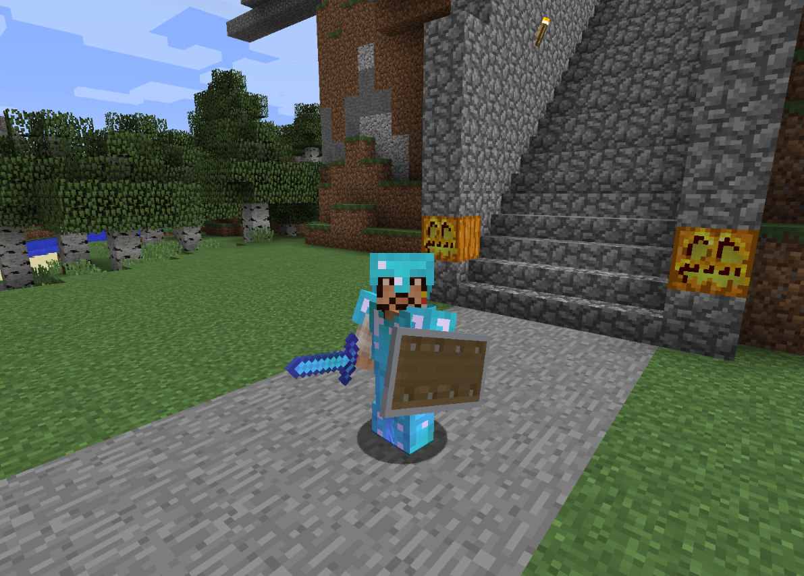
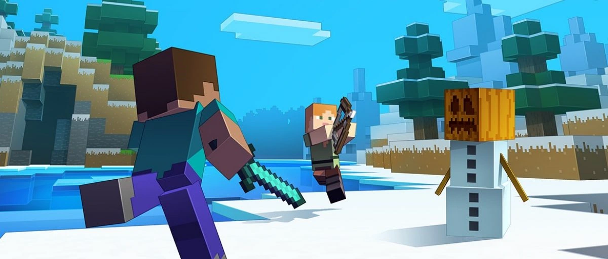

The Combat Update, Minecraft 1.9, was released on February 29, 2016, bringing
significant changes and new features
to the game's combat mechanics. Notably, the update introduced a cooldown system for melee attacks, requiring
precise timing for maximum damage instead of the previous spam-clicking method. Dual wielding was also added,
allowing players to hold items in both hands. Shields were introduced, enhancing defence, and new types of arrows,
such as spectral and tipped arrows, provided special effects for ranged attacks. Additionally, sweeping edge
enchantments were added, improving attack range and making combat more strategic.


The update also enhanced the End dimension, adding end cities with valuable loot
and the hostile mob shulkers, as
well as the elytra, an item enabling players to glide through the air, revolutionising travel within the game. End
gateway portals were introduced, allowing players to return to the End after defeating the Ender Dragon, thereby
extending endgame content. Furthermore, new blocks such as purpur and end stone bricks were included, giving
builders new materials to work with, and adding variety to the aesthetic of structures built in the End.
Beyond the combat and End dimension improvements, the 1.9 update also introduced
changes to other areas of the
game. The addition of new commands and changes to existing ones expanded the limit for map makers and server
administrators. Players could now set their spawn point using beds in the End and Nether, making survival in these
dimensions more manageable. The update also included various bug fixes and performance improvements, ensuring a
smoother and more enjoyable gameplay experience for all players.